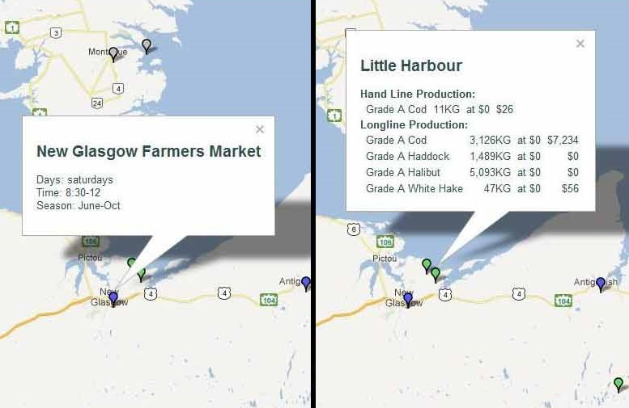
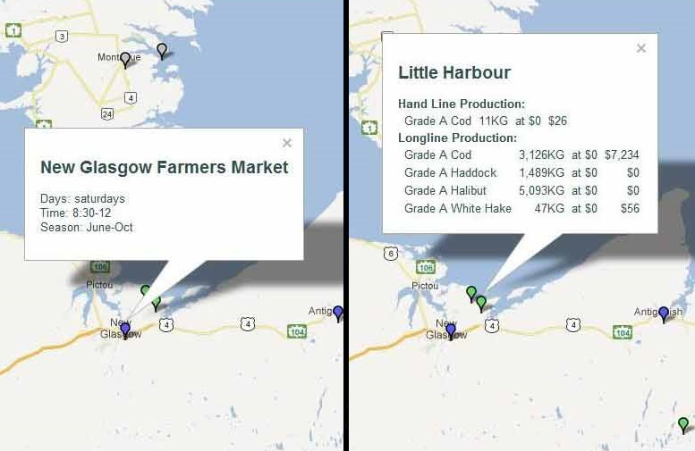
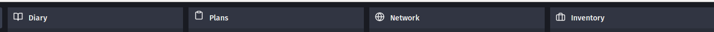

We started this series of projects with a group of timber growers, loggers, sawyers and woodworkers in Wisconsin. The system worked exactly the way that timber processes work.

We thought the group had a good business plan, and we thought the software was excellent. In particular, the software did manufacturing cost accounting much better and simpler than most expensive packaged software. We were very proud of it, and the timber group loved it.
Unfortunately, the group fell apart (having nothing to do with the software, and everything to do with business disagreements). But if another timber group is interested, we would be happy to revive the software.
Then we got a request from a woman in Minnesota who was running a local food network. She was also a single parent, taking care of her parents, running a herd of dairy cows, and making cheese. Needless to say, she was going a little crazy...
She wanted administrative software. And she knew exactly how it should work. So we made it work that way.
Since then, four other food networks have used the software, which continuously improved from their ideas. As far as we know, only one of these food networks,is still going (again nothing to do with the software). This stuff is hard!
The remaining network, Fifth Season, is especially interesting because it is a multi-stakeholder co-op.
We have not worked on this software for awhile. Lots of other people are doing food network and food hub software now, vs nobody when we started. We prefer to solve unsolved problems. But we look forward to collaboration with food software developers to map food specific domain vocabulary to the generic ValueFlows economic vocabulary.
 

We started this project with help from Ken Meter of the Crossroads Resource Center, the best local economic analyst we have ever met. But it really came alive when Jordan and Dave, who represented a cooperative of small fishing boats in Nova Scotia, got ahold of it. They wanted to plan a better distribution system for sustainably caught fish, networked throughout the province.
You can read about them here and get the software here, or use it here.
The term Value Network was coined by Verna Allee. The Open part was added by Sensorica. We worked with them to create the NRP (Network Resource Planning / VAS (Value Accounting System) software that was the beginning of our manufacturing/supply chain efforts. You can see it in action here. Here are some concept/tutorial slideshows.
The Sensorica open value network comes out of the global trend towards open source hardware and commons-based peer to peer (P2P) production. They offer anyone in the world a chance to start a project, contribute to an existing project, and be rewarded in proportion to their contributions.
Sensorica's unique contribution to the next economy is the "Value Equation", where instead of the boss taking a profit, the income is distributed to the contributors using a democratically decided equation.
Another group who used this version of the software was the Driftless Herbal Exchange Network close to home in SW Wisconsin. They were a group of farmers, harvesters, drying sites, and sellers of locally grown herbs. As usual, the software benefitted from having a very different use case thrown at it.
FairCoop was looking to start a new initiative called Freedom Coop, where refugees in Europe could have the opportunity to work and create and exchange, which is not always available to them. FairCoop forked the NRP software, called it OCP for Open Collaborative Platform, and got to work. With our help, they integrated it with their FairCoin alternate currency, among many other improvements.
Then started using it for a cooperative banking initiative called Bank of the Commons. Then started using it for their internal work, which they now could support with living wage payments in FairCoin.
The software was getting some exercise, with new developers and lots of new requirements getting thrown at it. Fortunately, the underlying REA model has held up very nicely!
We've been working lately with 2 groups who have broader aspirations, FairCoop and the Mutual Aid Network. They both want to support many options for experimenting with creating the next-economy. Both are also interested in economic operations plus an analytical layer. Although neither has done much with production, both are headed that direction.
At the same time, it has become apparent that monolith platforms aren't the best way to support this kind of thing. And that we need to be creating software that mimics the kinds of organizations that are being created: distributed, fluid, and networked.
Both of these groups have started software interoperability projects, which we are happy to participate in, such as the Open Cooperative Ecosystem project. They and other groups are even starting to coordinate with each other!
And other groups are picking up on this, like Milwaukee's LearnDeep, a network of high school fablabs and local companies who contribute materials, who forked the Open Cooperative Ecosystem software.
So, once we break it up, we want to be able to put it all back together in configurable apps that can interact with each other, just like the people and organizations want to do.

Please send us an email
if you want to contact us directly.
You can also subscribe to our mailing list.
 mikorizal software
mikorizal software